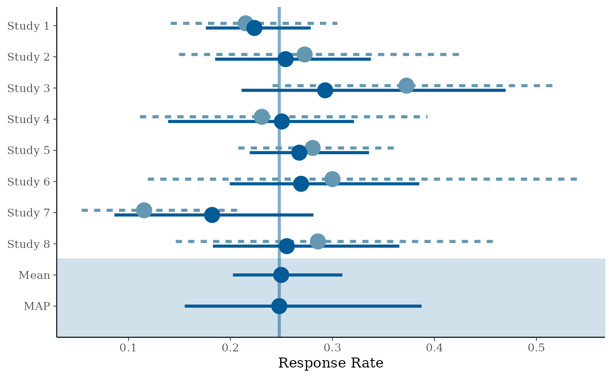
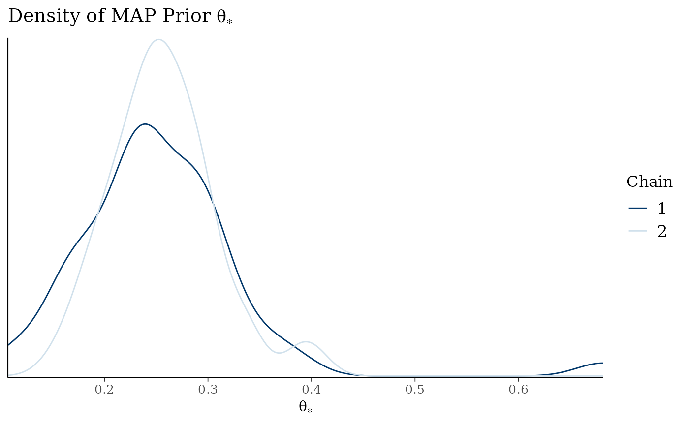
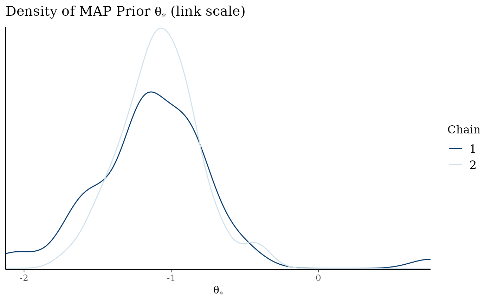
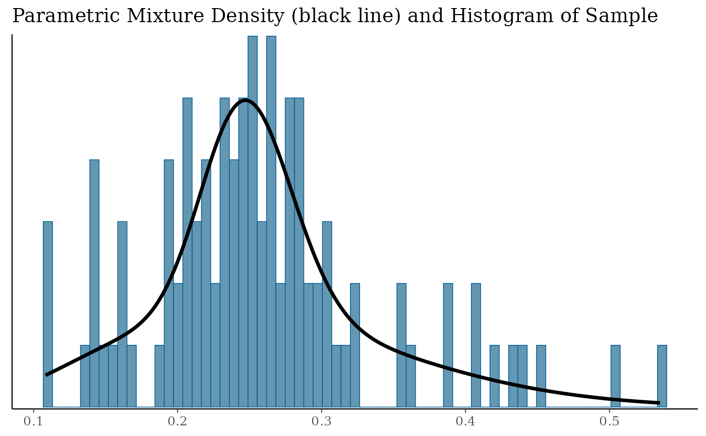
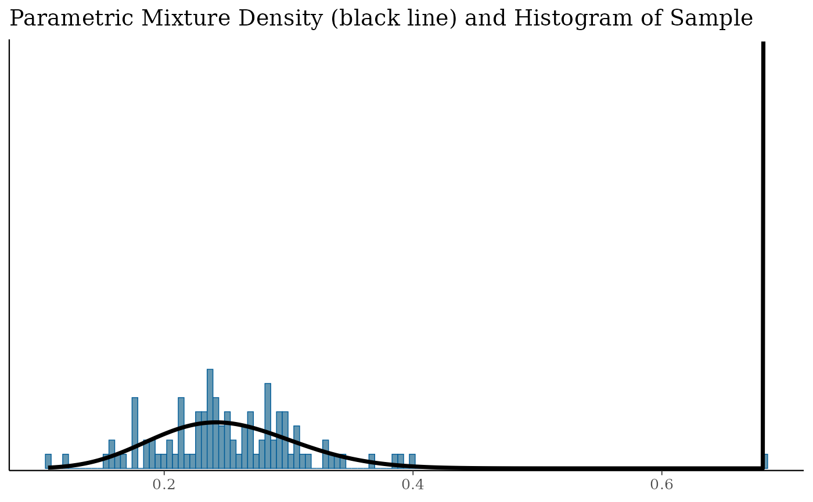

Meta-Analytic-Predictive (MAP) analysis for generalized linear
models suitable for normal, binary, or Poisson data. Model
specification and overall syntax follows mainly
glm conventions.
Usage
gMAP(
formula,
family = gaussian,
data,
weights,
offset,
tau.strata,
tau.dist = c("HalfNormal", "TruncNormal", "Uniform", "Gamma", "InvGamma", "LogNormal",
"TruncCauchy", "Exp", "Fixed"),
tau.prior,
tau.strata.pred = 1,
beta.prior,
prior_PD = FALSE,
REdist = c("normal", "t"),
t.df = 5,
contrasts = NULL,
iter = getOption("RBesT.MC.iter", 6000),
warmup = getOption("RBesT.MC.warmup", 2000),
thin = getOption("RBesT.MC.thin", 4),
init = getOption("RBesT.MC.init", 1),
chains = getOption("RBesT.MC.chains", 4),
cores = getOption("mc.cores", 1L)
)
# S3 method for class 'gMAP'
print(x, digits = 3, probs = c(0.025, 0.5, 0.975), ...)
# S3 method for class 'gMAP'
fitted(object, type = c("response", "link"), probs = c(0.025, 0.5, 0.975), ...)
# S3 method for class 'gMAP'
coef(object, probs = c(0.025, 0.5, 0.975), ...)
# S3 method for class 'gMAP'
as.matrix(x, ...)
# S3 method for class 'gMAP'
summary(
object,
type = c("response", "link"),
probs = c(0.025, 0.5, 0.975),
...
)Arguments
- formula
the model formula describing the linear predictor and encoding the grouping; see details
- family
the family of distributions defining the statistical model (
binomial,gaussian, orpoisson)- data
optional data frame containing the variables of the model. If not found in
data, the variables are taken fromenvironment(formula).- weights
optional weight vector; see details below.
- offset
offset term in statistical model used for Poisson data
- tau.strata
sets the exchangability stratum per study. That is, it is expected that each study belongs to a single stratum. Default is to assign all studies to stratum 1. See section differential heterogeniety below.
- tau.dist
type of prior distribution for
tau; supported priors areHalfNormal(default),TruncNormal,Uniform,Gamma,InvGamma,LogNormal,TruncCauchy,ExpandFixed.- tau.prior
parameters of prior distribution for
tau; see section prior specification below.- tau.strata.pred
the index for the prediction stratum; default is 1.
- beta.prior
mean and standard deviation for normal priors of regression coefficients, see section prior specification below.
- prior_PD
logical to indicate if the prior predictive distribution should be sampled (no conditioning on the data). Defaults to
FALSE.- REdist
type of random effects distribution.
Normal(default) ort.- t.df
degrees of freedom if random-effects distribution is
t.- contrasts
an optional list; See
contrasts.argfrommodel.matrix.default.- iter
number of iterations (including warmup).
- warmup
number of warmup iterations.
- thin
period of saving samples.
- init
positive number to specify uniform range on unconstrained space for random initialization. See
stan.- chains
number of Markov chains.
- cores
number of cores for parallel sampling of chains.
- x, object
gMAPanalysis object created bygMAPfunction- digits
number of displayed significant digits.
- probs
defines quantiles to be reported.
- ...
optional arguments are ignored
- type
sets reported scale (
response(default) orlink).
Value
The function returns a S3 object of type gMAP. See
the methods section below for applicable functions to query the
object.
Details
The meta-analytic-predictive (MAP) approach derives a prior from historical data using a hierarchical model. The statistical model is formulated as a generalized linear mixed model for binary, normal (with fixed \(\sigma\)) and Poisson endpoints:
$$y_{ih}|\theta_{ih} \sim f(y_{ih} | \theta_{ih})$$
Here, \(i=1,\ldots,N\) is the index for observations, and \(h=1,\ldots,H\) is the index for the grouping (usually studies). The model assumes the linear predictor for a transformed mean as
$$g(\theta_{ih}; x_{ih},\beta) = x_{ih} \, \beta + \epsilon_h$$
with \(x_{ih}\) being the row vector of \(k\) covariates for observation \(i\). The variance component is assumed by default normal
$$\epsilon_h \sim N(0,\tau^2), \qquad h=1,\ldots,H$$
Lastly, the Bayesian implementation assumes independent normal
priors for the \(k\) regression coefficients and a prior for the
between-group standard deviation \(\tau\) (see taud.dist
for available distributions).
The MAP prior will then be derived from the above model as the conditional distribution of \(\theta_{\star}\) given the available data and the vector of covariates \(x_{\star}\) defining the overall intercept
$$\theta_{\star}| x_{\star},y .$$
A simple and common case arises for one observation (summary statistic) per trial. For a normal endpoint, the model then simplifies to the standard normal-normal hierarchical model. In the above notation, \(i=h=1,\ldots,H\) and
$$y_h|\theta_h \sim N(\theta_h,s_h^2)$$ $$\theta_h = \mu + \epsilon_h$$ $$\epsilon_h \sim N(0,\tau^2),$$
where the more common \(\mu\) is used for the only (intercept) parameter \(\beta_1\). Since there are no covariates, the MAP prior is simply \(Pr(\theta_{\star} | y_1,\ldots,y_H)\).
The hierarchical model is a compromise between the two extreme cases of full pooling (\(\tau=0\), full borrowing, no discounting) and no pooling (\(\tau=\infty\), no borrowing, stratification). The information content of the historical data grows with H (number of historical data items) indefinitely for full pooling whereas no information is gained in a stratified analysis. For a fixed \(\tau\), the maximum effective sample size of the MAP prior is \(n_\infty\) (\(H\rightarrow \infty\)), which for a normal endpoint with fixed \(\sigma\) is
$$n_\infty = \left(\frac{\tau^2}{\sigma^2}\right)^{-1},$$
(Neuenschwander et al., 2010). Hence, the ratio \(\tau/\sigma\) limits the amount of information a MAP prior is equivalent to. This allows for a classification of \(\tau\) values in relation to \(\sigma\), which is crucial to define a prior \(P_\tau\). The following classification is useful in a clinical trial setting:
| Heterogeneity | \(\tau/\sigma\) | \(n_\infty\) |
| small | 0.0625 | 256 |
| moderate | 0.125 | 64 |
| substantial | 0.25 | 16 |
| large | 0.5 | 4 |
| very large | 1.0 | 1 |
The above formula for \(n_\infty\) assumes a known \(\tau\). This is unrealistic as the between-trial heterogeneity parameter is often not well estimable, in particular if the number of trials is small (H small). The above table helps to specify a prior distribution for \(\tau\) appropriate for the given context which defines the crucial parameter \(\sigma\). For binary and Poisson endpoints, normal approximations can be used to determine \(\sigma\). See examples below for concrete cases.
The design matrix \(X\) is defined by the formula for the linear
predictor and is always of the form response ~ predictor |
grouping, which follows glm
conventions. The syntax has been extended to include a
specification of the grouping (for example study) factor of the
data with a horizontal bar, |. The bar separates the
optionally specified grouping level, i.e. in the binary endpoint
case cbind(r, n-r) ~ 1 | study. By default it is assumed
that each row corresponds to an individual group (for which an
individual parameter is estimated). Specifics for the different
endpoints are:
- normal
family=gaussianassumes an identity link function. Theresponseshould be given as matrix with two columns with the first column being the observed mean value \(y_{ih}\) and the second column the standard error \(se_{ih}\) (of the mean). Additionally, it is recommended to specify with theweightargument the number of units which contributed to the (mean) measurement \(y_{ih}\). This information is used to estimate \(\sigma\).- binary
family=binomialassumes a logit link function. Theresponsemust be given as two-column matrix with number of responders \(r\) (first column) and non-responders \(n-r\) (second column).- Poisson
family=poissonassumes a log link function. Theresponseis a vector of counts. The total exposure times can be specified by anoffset, which will be linearly added to the linear predictor. Theoffsetcan be given as part of the formula,y ~ 1 + offset(log(exposure))or as theoffsetargument togMAP. Note that the exposure unit must be given as log-offset.
Methods (by generic)
print(gMAP): displays a summary of the gMAP analysis.fitted(gMAP): returns the quantiles of the posterior shrinkage estimates for each data item used during the analysis of the givengMAPobject.coef(gMAP): returns the quantiles of the predictive distribution. User can choose withtypeif the result is on the response or the link scale.as.matrix(gMAP): extracts the posterior sample of the model.summary(gMAP): returns the summaries of a gMAP. analysis. Output is agMAPsummaryobject, which is a list containingtauposterior summary of the heterogeneity standard deviation
betaposterior summary of the regression coefficients
theta.predsummary of the predictive distribution (given in dependence on the
typeargument either onresponseorlinkscale)thetaposterior summary of the mean estimate (also depends on the
typeargument)
Differential Discounting
The above model assumes the same between-group standard deviation \(\tau\), which implies that the data are equally relevant. This assumption can be relaxed to more than one \(\tau\). That is,
$$\epsilon_h \sim N(0,\tau_{s(h)}^2)$$
where \(s(h)\) assignes group \(h\) to one of \(S\) between-group heterogeneity strata.
For example, in a situation with two randomized and four
observational studies, one may want to assume \(\tau_1\) (for
trials 1 and 2) and \(\tau_2\) (for trials 3-6) for the
between-trial standard deviations of the control means. More
heterogeneity (less relevance) for the observational studies can
then be expressed by appropriate priors for \(\tau_1\) and
\(\tau_2\). In this case, \(S=2\) and the strata assignments
(see tau.strata argument) would be \(s(1)=s(2)=1,
s(3)=\ldots=s(6)=2\).
Prior Specification
The prior distribution for the regression coefficients \(\beta\) is normal.
If a single number is given, then this is used as the standard deviation and the default mean of 0 is used.
If a vector is given, it must be of the same length as number of covariates defined and is used as standard deviation.
If a matrix with a single row is given, its first row will be used as mean and the second row will be used as standard deviation for all regression coefficients.
Lastly, a two-column matrix (mean and standard deviation columns) with as many columns as regression coefficients can be given.
It is recommended to always specify a beta.prior. Per
default a mean of 0 is set. The standard deviation is set to 2 for
the binary case, to 100 * sd(y) for the normal case and to
sd(log(y + 0.5 + offset)) for the Poisson case.
For the between-trial heterogeniety \(\tau\) prior, a dispersion
parameter must always be given for each exchangeability
stratum. For the different tau.prior distributions, two
parameters are needed out of which one is set to a default value if
applicable:
| Prior | \(a\) | \(b\) | default |
HalfNormal | \(\mu = 0\) | \(\sigma\) | |
TruncNormal | \(\mu\) | \(\sigma\) | \(\mu = 0\) |
Uniform | a | b | a = 0 |
Gamma | \(\alpha\) | \(\beta\) | |
InvGamma | \(\alpha\) | \(\beta\) | |
LogNormal | \(\mu_{\log}\) | \(\sigma_{\log}\) | |
TruncCauchy | \(\mu\) | \(\sigma\) | \(\mu = 0\) |
Exp | \(\beta\) | 0 | |
Fixed | a | 0 |
For a prior distribution with a default location parameter, a vector of length equal to the number of exchangability strata can be given. Otherwise, a two-column matrix with as many rows as exchangability strata must be given, except for a single \(\tau\) stratum, for which a vector of length two defines the parameters a and b.
Random seed
The MAP analysis is performed using
Markov-Chain-Monte-Carlo (MCMC) in rstan. MCMC
is a stochastic algorithm. To obtain exactly reproducible results
you must use the set.seed function
before calling gMAP. See RBesT
overview page for global options on setting further MCMC simulation
parameters.
References
Neuenschwander B, Capkun-Niggli G, Branson M, Spiegelhalter DJ. Summarizing historical information on controls in clinical trials. Clin Trials. 2010; 7(1):5-18
Schmidli H, Gsteiger S, Roychoudhury S, O'Hagan A, Spiegelhalter D, Neuenschwander B. Robust meta-analytic-predictive priors in clinical trials with historical control information. Biometrics 2014;70(4):1023-1032.
Weber S, Li Y, Seaman III J.W., Kakizume T, Schmidli H. Applying Meta-Analytic Predictive Priors with the R Bayesian evidence synthesis tools. JSS 2021; 100(19):1-32
Examples
## Setting up dummy sampling for fast execution of example
## Please use 4 chains and 20x more warmup & iter in practice
.user_mc_options <- options(RBesT.MC.warmup=50, RBesT.MC.iter=100,
RBesT.MC.chains=2, RBesT.MC.thin=1)
# Binary data example 1
# Mean response rate is ~0.25. For binary endpoints
# a conservative choice for tau is a HalfNormal(0,1) as long as
# the mean response rate is in the range of 0.2 to 0.8. For
# very small or large rates consider the n_infinity approach
# illustrated below.
# for exact reproducible results, the seed must be set
set.seed(34563)
map_AS <- gMAP(cbind(r, n-r) ~ 1 | study,
family=binomial,
data=AS,
tau.dist="HalfNormal", tau.prior=1,
beta.prior=2)
#> Assuming default prior location for beta: 0
#> Warning: The largest R-hat is 1.11, indicating chains have not mixed.
#> Running the chains for more iterations may help. See
#> https://mc-stan.org/misc/warnings.html#r-hat
#> Warning: Bulk Effective Samples Size (ESS) is too low, indicating posterior means and medians may be unreliable.
#> Running the chains for more iterations may help. See
#> https://mc-stan.org/misc/warnings.html#bulk-ess
#> Warning: Tail Effective Samples Size (ESS) is too low, indicating posterior variances and tail quantiles may be unreliable.
#> Running the chains for more iterations may help. See
#> https://mc-stan.org/misc/warnings.html#tail-ess
#> Warning: Maximal Rhat > 1.1. Consider increasing RBesT.MC.warmup MCMC parameter.
#> Final MCMC sample equivalent to less than 1000 independent draws.
#> Please consider increasing the MCMC simulation size.
print(map_AS)
#> Generalized Meta Analytic Predictive Prior Analysis
#>
#> Call: gMAP(formula = cbind(r, n - r) ~ 1 | study, family = binomial,
#> data = AS, tau.dist = "HalfNormal", tau.prior = 1, beta.prior = 2)
#>
#> Exchangeability tau strata: 1
#> Prediction tau stratum : 1
#> Maximal Rhat : 1.11
#>
#> Between-trial heterogeneity of tau prediction stratum
#> mean sd 2.5% 50% 97.5%
#> 0.370 0.163 0.110 0.352 0.764
#>
#> MAP Prior MCMC sample
#> mean sd 2.5% 50% 97.5%
#> 0.2580 0.0817 0.1230 0.2510 0.4460
#> Warning: Parts of the model have not converged (some Rhats are > 1.1).
#> Be careful when analysing the results! It is recommend to run
#> more iterations and/or setting stronger priors.
# obtain numerical summaries
map_sum <- summary(map_AS)
print(map_sum)
#> Heterogeneity parameter tau per stratum:
#> mean sd 2.5% 50% 97.5%
#> tau[1] 0.37 0.163 0.11 0.352 0.764
#>
#> Regression coefficients:
#> mean sd 2.5% 50% 97.5%
#> (Intercept) -1.12 0.178 -1.47 -1.11 -0.767
#>
#> Mean estimate MCMC sample:
#> mean sd 2.5% 50% 97.5%
#> theta_resp 0.248 0.033 0.187 0.247 0.317
#>
#> MAP Prior MCMC sample:
#> mean sd 2.5% 50% 97.5%
#> theta_resp_pred 0.258 0.0817 0.123 0.251 0.446
names(map_sum)
#> [1] "tau" "beta" "theta.pred" "theta"
# [1] "tau" "beta" "theta.pred" "theta"
map_sum$theta.pred
#> mean sd 2.5% 50% 97.5%
#> theta_resp_pred 0.2576768 0.08166927 0.1232554 0.2508299 0.4464658
# \donttest{
# graphical model checks (returns list of ggplot2 plots)
map_checks <- plot(map_AS)
# forest plot with shrinkage estimates
map_checks$forest_model

# density of MAP prior on response scale
map_checks$densityThetaStar

# density of MAP prior on link scale
map_checks$densityThetaStarLink

# }
# obtain shrinkage estimates
fitted(map_AS)
#> mean sd 2.5% 50% 97.5%
#> Study 1 0.2245230 0.03009877 0.16467408 0.2255518 0.2698386
#> Study 2 0.2600974 0.05160094 0.17318985 0.2610201 0.3745415
#> Study 3 0.3157218 0.06628311 0.21188389 0.3041774 0.4656744
#> Study 4 0.2440305 0.04812868 0.15154707 0.2442546 0.3333963
#> Study 5 0.2681039 0.03179363 0.21285005 0.2633981 0.3412085
#> Study 6 0.2670423 0.05109495 0.19112391 0.2609730 0.3660353
#> Study 7 0.1704818 0.04185255 0.08821842 0.1727647 0.2466163
#> Study 8 0.2649455 0.04246509 0.20001270 0.2574109 0.3462487
# regression coefficients
coef(map_AS)
#> mean sd 2.5% 50% 97.5%
#> (Intercept) -1.11748 0.1782488 -1.468582 -1.113787 -0.7667301
# finally fit MAP prior with parametric mixture
map_mix <- mixfit(map_AS, Nc=2)
plot(map_mix)$mix

# \donttest{
# optionally select number of components automatically via AIC
map_automix <- automixfit(map_AS)
plot(map_automix)$mix

# }
# Normal example 2, see normal vignette
# Prior considerations
# The general principle to derive a prior for tau can be based on the
# n_infinity concept as discussed in Neuenschwander et al., 2010.
# This assumes a normal approximation which applies for the colitis
# data set as:
p_bar <- mean(with(colitis, r/n))
s <- round(1/sqrt(p_bar * (1-p_bar)), 1)
# s is the approximate sampling standard deviation and a
# conservative prior is tau ~ HalfNormal(0,s/2)
tau_prior_sd <- s/2
# Evaluate HalfNormal prior for tau
tau_cat <- c(pooling=0
,small=0.0625
,moderate=0.125
,substantial=0.25
,large=0.5
,veryLarge=1
,stratified=Inf)
# Interval probabilites (basically saying we are assuming
# heterogeniety to be smaller than very large)
diff(2*pnorm(tau_cat * s, 0, tau_prior_sd))
#> small moderate substantial large veryLarge stratified
#> 0.09947645 0.09793620 0.18551227 0.29976457 0.27181024 0.04550026
# Cumulative probabilities as 1-F
1 - 2*(pnorm(tau_cat * s, 0, tau_prior_sd) - 0.5)
#> pooling small moderate substantial large veryLarge
#> 1.00000000 0.90052355 0.80258735 0.61707508 0.31731051 0.04550026
#> stratified
#> 0.00000000
## Recover user set sampling defaults
options(.user_mc_options)